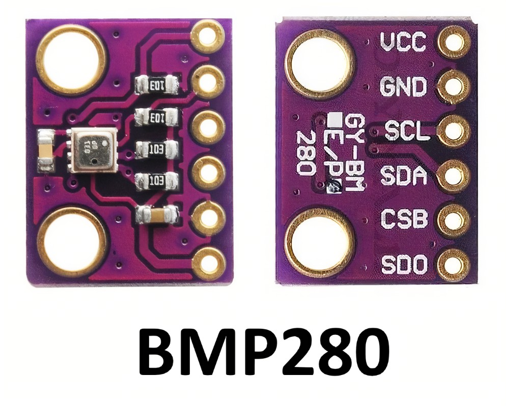
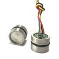
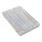
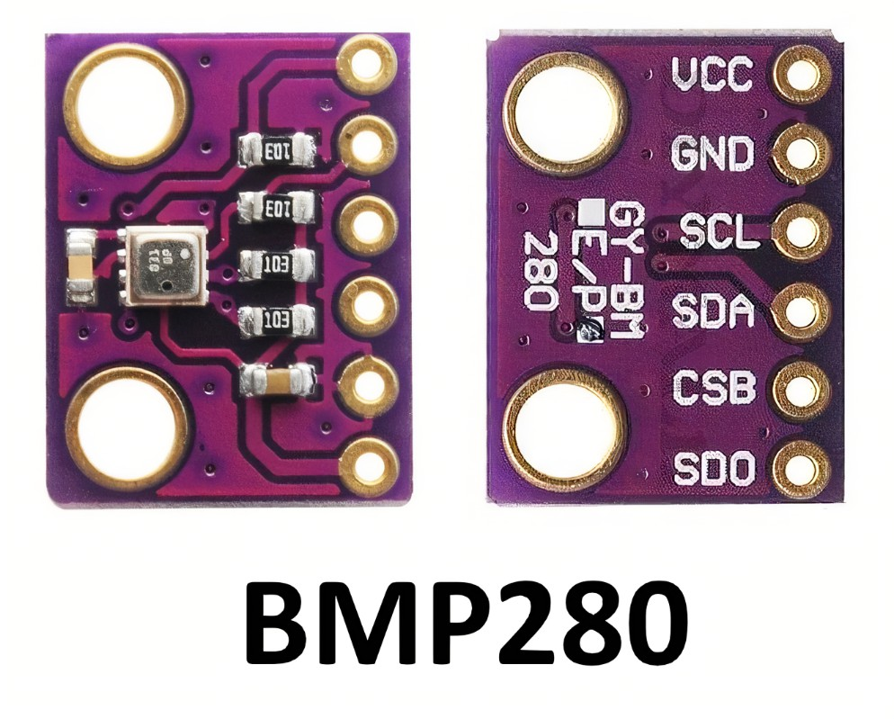
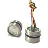
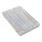

1. Montagem em Protoboard
O protótipo inicial foi montado em protoboard para validação do circuito e dos sensores. Os módulos (ESP32, BMP280, SMP3011 e SSD1306) foram conectados via barramento I2C.
 





2. Esquema de ligação
ESP32 SSD1306 (OLED) BMP280 SMP3011 Botões
----- --------------- ------ ------- -------
3V3 -------- VCC VCC VCC VCC
GND -------- GND GND GND GND
GPIO21 ----- SDA SDA SDA/I2C -
GPIO22 ----- SCL SCL SCL/I2C -
GPIO32 -------------------------- BTN1 (UP)
GPIO33 -------------------------- BTN2 (DOWN)
GPIO25 -------------------------- BTN3 (CONF/DUO)
Obs: dependendo da versão do SMP3011, a saída pode ser analógica (ADC) ou digital/I2C. Ajustar conforme datasheet.

3. Código-Fonte Comentado (ESP32)
O firmware do ESP32 foi desenvolvido em C++ utilizando o ESP-IDF. O código é modular, facilitando a manutenção e futuras expansões. Abaixo, o código principal com comentários explicativos:
#include
#include "freertos/FreeRTOS.h"
#include "freertos/task.h"
#include "esp_log.h"
#include "driver/gpio.h"
#include "i2c_driver.h"
#include "bmp280.h"
#include "smp3011.h"
#include "ssd1306.h"
#include "button_driver.h"
static const char *TAG = "MAIN";
// Enum para os modos de operação
typedef enum {
MODE_STANDARD,
MODE_ANALYTICAL_VEHICLE_TYPE,
MODE_ANALYTICAL_LOAD_TYPE,
MODE_ANALYTICAL_RESULT
} operating_mode_t;
static operating_mode_t current_mode = MODE_STANDARD;
// Variáveis para o modo analítico
static int selected_vehicle_type = 0; // 0: Carro de Passeio, 1: SUV/Caminhonete
static int selected_load_type = 0; // 0: Vazio, 1: Carga Média, 2: Carga Máxima
// Definições de pinos para os botões (redefinidas para clareza no main)
#define BUTTON_UP_PIN GPIO_NUM_0 // Exemplo de pino para o Botão UP
#define BUTTON_DOWN_PIN GPIO_NUM_4 // Exemplo de pino para o Botão DOWN
#define BUTTON_SELECT_PIN GPIO_NUM_5 // Exemplo de pino para o Botão SELECT/MODE
// Protótipos de funções
void display_standard_mode(float temperature, float pressure_hpa, float pressure_psi);
void display_analytical_vehicle_type_selection();
void display_analytical_load_type_selection();
void display_analytical_result();
void handle_button_press(gpio_num_t gpio_num);
// Fila de eventos para botões
static xQueueHandle gpio_evt_queue = NULL;
static void IRAM_ATTR gpio_isr_handler(void* arg) {
uint32_t gpio_num = (uint32_t) arg;
xQueueSendFromISR(gpio_evt_queue, &gpio_num, NULL);
}
void button_task(void* arg) {
uint32_t io_num;
uint32_t last_press_time[GPIO_NUM_MAX] = {0};
const uint32_t debounce_time_ms = 200; // Tempo de debounce
while(1) {
if(xQueueReceive(gpio_evt_queue, &io_num, portMAX_DELAY)) {
uint32_t current_time = xTaskGetTickCount() * portTICK_PERIOD_MS;
if (current_time - last_press_time[io_num] > debounce_time_ms) {
last_press_time[io_num] = current_time;
handle_button_press((gpio_num_t)io_num);
}
}
}
}
// Função para lidar com o pressionamento dos botões
void handle_button_press(gpio_num_t gpio_num) {
static uint32_t last_mode_button_press_time = 0;
uint32_t current_time = xTaskGetTickCount() * portTICK_PERIOD_MS;
if (gpio_num == BUTTON_SELECT_PIN) {
// Lógica para alternar modos (dois cliques rápidos)
if (current_time - last_mode_button_press_time < 500) { // Dois cliques em menos de 500ms
if (current_mode == MODE_STANDARD) {
current_mode = MODE_ANALYTICAL_VEHICLE_TYPE;
ESP_LOGI(TAG, "Mudando para Modo Analítico: Seleção de Tipo de Veículo");
} else {
current_mode = MODE_STANDARD;
ESP_LOGI(TAG, "Mudando para Modo Padrão");
}
last_mode_button_press_time = 0; // Reseta para evitar múltiplos switches
} else {
last_mode_button_press_time = current_time;
// Lógica para seleção/confirmação no modo analítico
if (current_mode == MODE_ANALYTICAL_VEHICLE_TYPE) {
current_mode = MODE_ANALYTICAL_LOAD_TYPE;
ESP_LOGI(TAG, "Modo Analítico: Seleção de Tipo de Carga");
} else if (current_mode == MODE_ANALYTICAL_LOAD_TYPE) {
current_mode = MODE_ANALYTICAL_RESULT;
ESP_LOGI(TAG, "Modo Analítico: Exibindo Resultado");
} else if (current_mode == MODE_ANALYTICAL_RESULT) {
current_mode = MODE_ANALYTICAL_VEHICLE_TYPE; // Volta para seleção de veículo para nova análise
ESP_LOGI(TAG, "Modo Analítico: Reiniciando Seleção de Tipo de Veículo");
}
}
} else if (gpio_num == BUTTON_UP_PIN) {
if (current_mode == MODE_ANALYTICAL_VEHICLE_TYPE) {
selected_vehicle_type = (selected_vehicle_type + 1) % 2; // 0 ou 1
ESP_LOGI(TAG, "Tipo de Veículo Selecionado: %d", selected_vehicle_type);
} else if (current_mode == MODE_ANALYTICAL_LOAD_TYPE) {
selected_load_type = (selected_load_type + 1) % 3; // 0, 1 ou 2
ESP_LOGI(TAG, "Tipo de Carga Selecionado: %d", selected_load_type);
}
} else if (gpio_num == BUTTON_DOWN_PIN) {
if (current_mode == MODE_ANALYTICAL_VEHICLE_TYPE) {
selected_vehicle_type = (selected_vehicle_type - 1 + 2) % 2; // 0 ou 1
ESP_LOGI(TAG, "Tipo de Veículo Selecionado: %d", selected_vehicle_type);
} else if (current_mode == MODE_ANALYTICAL_LOAD_TYPE) {
selected_load_type = (selected_load_type - 1 + 3) % 3; // 0, 1 ou 2
ESP_LOGI(TAG, "Tipo de Carga Selecionado: %d", selected_load_type);
}
}
}
// Função para exibir dados no modo padrão
void display_standard_mode(float temperature, float pressure_hpa, float pressure_psi) {
char temp_str[32];
char press_hpa_str[32];
char press_psi_str[32];
snprintf(temp_str, sizeof(temp_str), "Temp: %.1f C", temperature);
snprintf(press_hpa_str, sizeof(press_hpa_str), "Press: %.1f hPa", pressure_hpa);
snprintf(press_psi_str, sizeof(press_psi_str), "Pneu: %.1f PSI", pressure_psi);
ssd1306_clear_display(SSD1306_I2C_ADDR);
ssd1306_display_text(SSD1306_I2C_ADDR, "Modo Padrao", 0, 0);
ssd1306_display_text(SSD1306_I2C_ADDR, temp_str, 2, 0);
ssd1306_display_text(SSD1306_I2C_ADDR, press_hpa_str, 3, 0);
ssd1306_display_text(SSD1306_I2C_ADDR, press_psi_str, 4, 0);
}
void display_analytical_vehicle_type_selection() {
ssd1306_clear_display(SSD1306_I2C_ADDR);
ssd1306_display_text(SSD1306_I2C_ADDR, "Modo Analitico", 0, 0);
ssd1306_display_text(SSD1306_I2C_ADDR, "Tipo Veiculo:", 2, 0);
if (selected_vehicle_type == 0) {
ssd1306_display_text(SSD1306_I2C_ADDR, "> Carro Passeio", 3, 0);
ssd1306_display_text(SSD1306_I2C_ADDR, " SUV/Caminhonete", 4, 0);
} else {
ssd1306_display_text(SSD1306_I2C_ADDR, " Carro Passeio", 3, 0);
ssd1306_display_text(SSD1306_I2C_ADDR, "> SUV/Caminhonete", 4, 0);
}
ssd1306_display_text(SSD1306_I2C_ADDR, "(SELECT para prox)", 6, 0);
}
void display_analytical_load_type_selection() {
ssd1306_clear_display(SSD1306_I2C_ADDR);
ssd1306_display_text(SSD1306_I2C_ADDR, "Modo Analitico", 0, 0);
ssd1306_display_text(SSD1306_I2C_ADDR, "Tipo Carga:", 2, 0);
if (selected_load_type == 0) {
ssd1306_display_text(SSD1306_I2C_ADDR, "> Vazio", 3, 0);
ssd1306_display_text(SSD1306_I2C_ADDR, " Carga Media", 4, 0);
ssd1306_display_text(SSD1306_I2C_ADDR, " Carga Maxima", 5, 0);
} else if (selected_load_type == 1) {
ssd1306_display_text(SSD1306_I2C_ADDR, "> Carga Media", 4, 0);
ssd1306_display_text(SSD1306_I2C_ADDR, " Carga Maxima", 5, 0);
} else {
ssd1306_display_text(SSD1306_I2C_ADDR, " Vazio", 3, 0);
ssd1306_display_text(SSD1306_I2C_ADDR, " Carga Media", 4, 0);
ssd1306_display_text(SSD1306_I2C_ADDR, "> Carga Maxima", 5, 0);
}
ssd1306_display_text(SSD1306_I2C_ADDR, "(SELECT para prox)", 6, 0);
}
void display_analytical_result() {
char pressure_suggestion[32];
// Lógica de sugestão de pressão baseada na pesquisa
if (selected_vehicle_type == 0) { // Carro de Passeio
if (selected_load_type == 0) { // Vazio
snprintf(pressure_suggestion, sizeof(pressure_suggestion), "Sugestao: 30-32 PSI");
} else if (selected_load_type == 1) { // Carga Media (assumindo como vazio para simplificar)
snprintf(pressure_suggestion, sizeof(pressure_suggestion), "Sugestao: 30-32 PSI");
} else { // Carga Maxima
snprintf(pressure_suggestion, sizeof(pressure_suggestion), "Sugestao: 34-36 PSI");
}
} else { // SUV/Caminhonete
if (selected_load_type == 0) { // Vazio
snprintf(pressure_suggestion, sizeof(pressure_suggestion), "Sugestao: 35-38 PSI");
} else if (selected_load_type == 1) { // Carga Media (assumindo como vazio para simplificar)
snprintf(pressure_suggestion, sizeof(pressure_suggestion), "Sugestao: 35-38 PSI");
} else { // Carga Maxima
snprintf(pressure_suggestion, sizeof(pressure_suggestion), "Sugestao: 40-45 PSI");
}
}
ssd1306_clear_display(SSD1306_I2C_ADDR);
ssd1306_display_text(SSD1306_I2C_ADDR, "Modo Analitico", 0, 0);
ssd1306_display_text(SSD1306_I2C_ADDR, pressure_suggestion, 2, 0);
ssd1306_display_text(SSD1306_I2C_ADDR, "(SELECT para reiniciar)", 4, 0);
}
// Task principal para leitura dos sensores e atualização do display
void main_task(void *pvParameters) {
float temperature = 0.0, pressure_hpa = 0.0, pressure_psi = 0.0;
while (1) {
// Leitura dos sensores apenas no modo padrão ou antes de exibir o resultado analítico
if (current_mode == MODE_STANDARD) {
esp_err_t bmp_ret = bmp280_read_temperature_and_pressure(BMP280_I2C_ADDR_0, &temperature, &pressure_hpa);
if (bmp_ret != ESP_OK) {
ESP_LOGE(TAG, "Falha ao ler do BMP280");
}
esp_err_t smp_ret = smp3011_read_pressure(SMP3011_I2C_ADDR, &pressure_psi);
if (smp_ret != ESP_OK) {
ESP_LOGE(TAG, "Falha ao ler do SMP3011");
}
}
// Atualiza o display com base no modo atual
switch (current_mode) {
case MODE_STANDARD:
display_standard_mode(temperature, pressure_hpa, pressure_psi);
break;
case MODE_ANALYTICAL_VEHICLE_TYPE:
display_analytical_vehicle_type_selection();
break;
case MODE_ANALYTICAL_LOAD_TYPE:
display_analytical_load_type_selection();
break;
case MODE_ANALYTICAL_RESULT:
display_analytical_result();
break;
}
vTaskDelay(pdMS_TO_TICKS(200)); // Atualiza a cada 200ms para melhor responsividade dos botões
}
}
extern "C" {
void app_main();
}
void app_main() {
ESP_LOGI(TAG, "Iniciando o Projeto de Sensor de Pressão para Pneus...");
// Configuração dos pinos GPIO para os botões
gpio_config_t io_conf = {};
io_conf.intr_type = GPIO_INTR_NEGEDGE; // Interrupção na borda de descida (botão pressionado)
io_conf.mode = GPIO_MODE_INPUT;
io_conf.pull_up_en = GPIO_PULLUP_ENABLE;
io_conf.pull_down_en = GPIO_PULLDOWN_DISABLE;
io_conf.pin_bit_mask = (1ULL << BUTTON_UP_PIN) | (1ULL << BUTTON_DOWN_PIN) | (1ULL << BUTTON_SELECT_PIN);
gpio_config(&io_conf);
gpio_evt_queue = xQueueCreate(10, sizeof(uint32_t));
gpio_install_isr_service(0);
gpio_isr_handler_add(BUTTON_UP_PIN, gpio_isr_handler, (void*) BUTTON_UP_PIN);
gpio_isr_handler_add(BUTTON_DOWN_PIN, gpio_isr_handler, (void*) BUTTON_DOWN_PIN);
gpio_isr_handler_add(BUTTON_SELECT_PIN, gpio_isr_handler, (void*) BUTTON_SELECT_PIN);
xTaskCreate(button_task, "button_task", 2048, NULL, 10, NULL);
// Inicializa o driver I2C
esp_err_t ret = i2c_master_init();
if (ret != ESP_OK) {
ESP_LOGE(TAG, "Falha ao inicializar o driver I2C");
return;
}
// Inicializa os sensores
ret = bmp280_init(BMP280_I2C_ADDR_0);
if (ret != ESP_OK) {
ESP_LOGE(TAG, "Falha ao inicializar o BMP280");
}
ret = smp3011_init(SMP3011_I2C_ADDR);
if (ret != ESP_OK) {
ESP_LOGE(TAG, "Falha ao inicializar o SMP3011");
}
// Inicializa o display OLED
ret = ssd1306_init(SSD1306_I2C_ADDR);
if (ret != ESP_OK) {
ESP_LOGE(TAG, "Falha ao inicializar o SSD1306");
}
// Cria a task principal
xTaskCreate(main_task, "main_task", 4096, NULL, 5, NULL);
ESP_LOGI(TAG, "Inicialização completa. O sistema está em execução.");
}
4. Plano de Testes
- Comparar leituras com manômetro de oficina (±1 psi de tolerância).
- Testar mudança de modo via duplo clique do BTN3.
- Verificar debounce dos botões em 30 ciclos de uso.
- Checar funcionamento do display sob luz solar direta.
- Medir consumo em operação e standby.